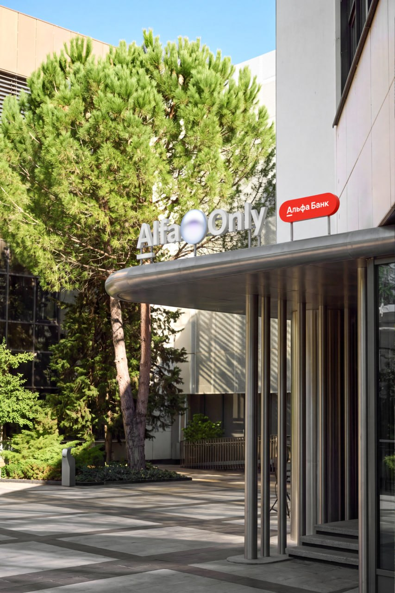
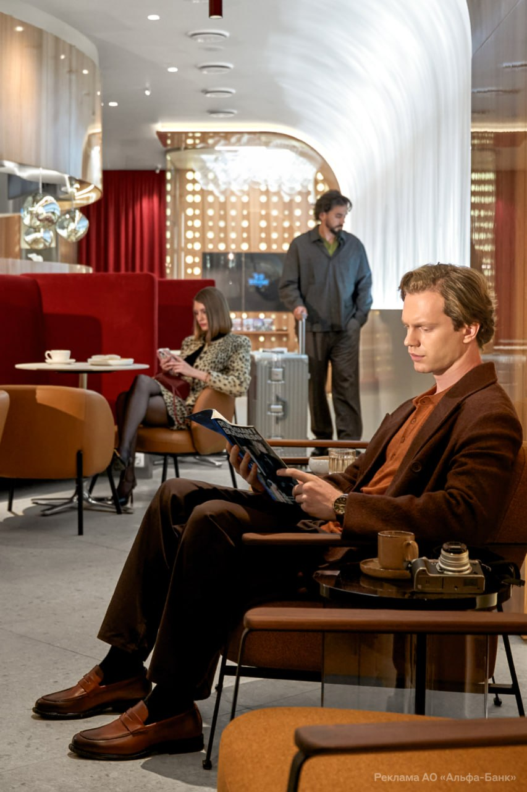

Москвач • Новости Москвы
@moscowach
Москвач • Новости Москвы
@moscowach
В аэропорту Сочи появилась тропическая жемчужина Alfa Only Lounge


🌴 В аэропорту Сочи появилась тропическая жемчужина Alfa Only Lounge
Вход в лаундж от Альфа-Банка украшен изящной аллеей и фонтаном. Дальше гостей встречает бар, самый большой среди лаунджей Alfa Only. Для тех, кто хочет отдохнуть в тишине, построили камерное пространство в глубине лаунджа. В любое время дня и ночи можно взять блюда от Remy Kitchen Bakery.
На размеренный лад настраивает и дизайн: в нём сочетаются тёплый эвкалиптовый шпон, плитка из ракушек и строгий металл. Над архитектурой работало бюро Wowhaus — то самое, которое преобразило Парк Горького.
Лаундж доступен для клиентов Alfa Only и А-Клуба.
Вход в лаундж от Альфа-Банка украшен изящной аллеей и фонтаном. Дальше гостей встречает бар, самый большой среди лаунджей Alfa Only. Для тех, кто хочет отдохнуть в тишине, построили камерное пространство в глубине лаунджа. В любое время дня и ночи можно взять блюда от Remy Kitchen Bakery.
На размеренный лад настраивает и дизайн: в нём сочетаются тёплый эвкалиптовый шпон, плитка из ракушек и строгий металл. Над архитектурой работало бюро Wowhaus — то самое, которое преобразило Парк Горького.
Лаундж доступен для клиентов Alfa Only и А-Клуба.